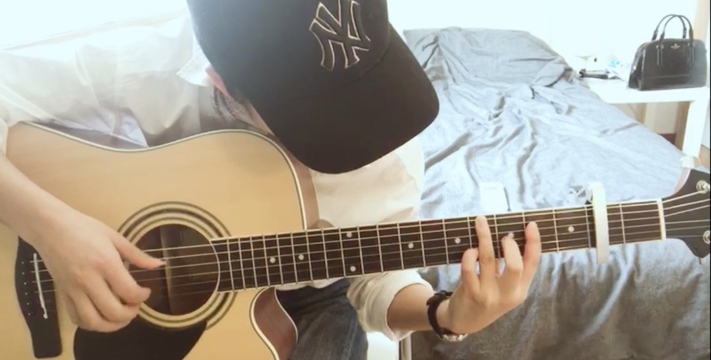
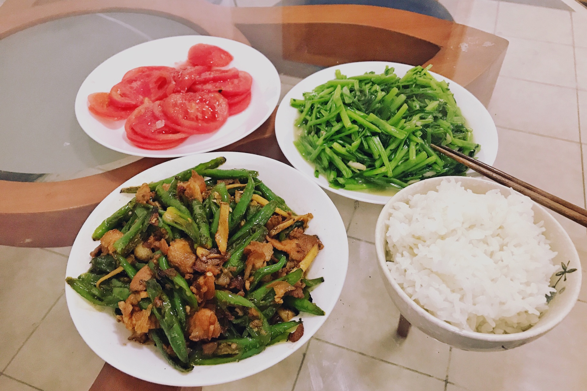
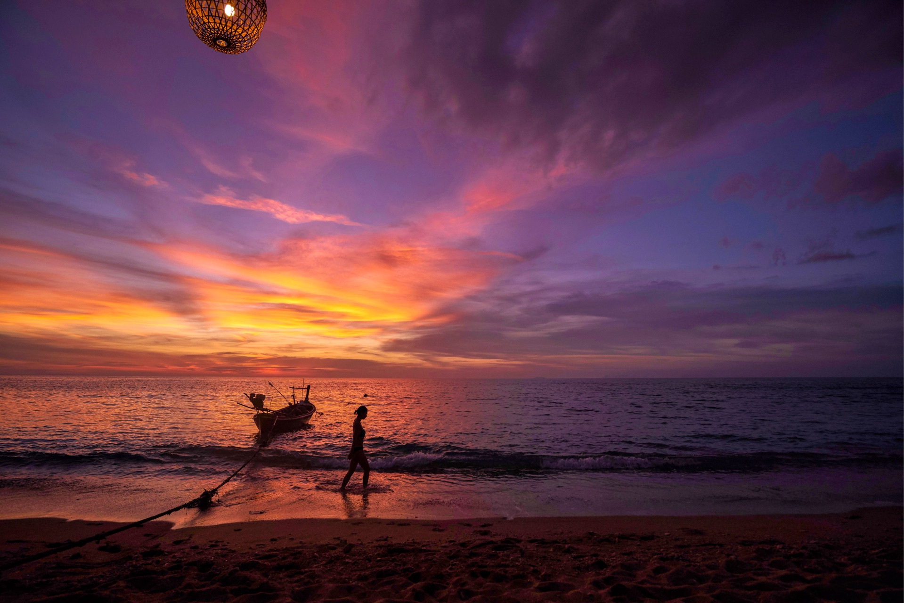

正文:
声明：最近因为微博号的转发，问我微博账号的同学们，很抱歉，我没有用过微博。
多图预警。非常感谢大家的喜欢。把在评论区有疑问的问题尽量在回答中解答，这样大家都能看到。
另外，没有必要怀疑这个回答的真实性和可行性，这些事情绝大多数都是在我近几年从零基础开始做的，并且全都是自学。自觉在每一个领域做的很欠缺，但确实尽了我最大的努力。以下：
曾经交往的男生都是异地恋，现在已单身一年半，离开大学后，独自生活了五年。女生的单身生活品质保障，收入是刚需。其次是丰富自己业余的生活，在情绪崩溃，觉得孤独时，至少支撑自己不倒下
一个人的生活有时候就像如鱼得水般自在，也有时像一个人与整个世界为战，你必须要抵抗随时会倾巢而袭的孤独无助感
工作。毕业五年来，一次次的裸辞，转行，换了五六份工作，换了四个完全不同的行业。目前在魔都拥有一份收入不算低的工作，工作时间自由，所以有更多的时间旅行，工作之余还有大多时间学习
正在考虑彻底改行，打算从零开始步入新的行业
户外。经常自己一个人出去浪，一年两次的七天以上长途，二十次左右的短途。背上包就是整个世界
如果是走休闲旅游线路，会自己一个人出发，住青旅再搭其他人，大家有共同的线路就一起结伴，不同线路时再挥手说再见
如果是走户外徒步或者登山，会在8264和磨房看帖或者发帖，找队友一起出行。遇见过后来成为的很好朋友，也遇见过临阵放鸽子，拖后腿的队友

出门在外，这两个包便是全部家当。
玩户外四年。是生活的解药，又是过瘾的毒药。热爱雪山，所以每年都去高原两次
13年新疆暴乱，一个人跑去了北疆，在青旅老板的建议下临时搭了两个陌生人，去走了禾木喀纳斯线。那时候不懂什么叫登山包，什么是登山杖，冲锋衣又是什么鬼，初生牛犊不怕虎的开始了户外之旅，便再也停不下来。
此处海拔5400，能见到珠峰
在EBC线上，凌晨四点起床，喊醒背夫替我指路上chukung-ri，同行的队友高反无法上山，于是我和背夫两个人踏着黑暗一步步走向光明，阳光从马卡鲁峰方向升起，六千，七千，八千级雪山环绕四周，阳光把山峰一个个点亮，日照金山，群山闪耀。背夫指完路后下山，我一个人坐在山顶，云从洛子峰身上缓慢的散开，正前方是被太阳照耀下的马卡鲁，左侧是洛子的巨大冰墙，排山倒海般的气势，右手是见过最美丽的山峰女神峰阿玛达布拉姆。崩腾的河流从山谷间呼啸而下，雪崩和冰裂的声音响彻山谷，除此之外，一片寂静。感谢生命赋予的美好，这个神奇的世界永远能带来感动，语言在这种环境下太无力了，渺小的那个我唯有幸福的流泪。那一瞬间，死而无憾。
早前在知乎上看到的问题“人生中最美好的一个瞬间是什么”，对我而言，这一份感动永远会激励着我前行。
珠峰南坡大本营昆布冰川


研究山峰
非常喜欢但丁的神曲中有一段：
但是，你又为何返回这痛苦的深渊，
为何不攀登那明媚的高山？
而这高山正是一切幸福的来由和开端。”
可能我这辈子也没办法完成7+2, 可能永远没有机会登上珠峰，可能只能站在k2的脚下瞻仰他的雄伟，可是我仍然会坚持去做，从五千到六千，再到更高的山峰，户外赐予我的意义已经远远超过了未来可能能登顶的山峰。
自己带队招队友
在做计划之前需要查大量的资料信息，确保计划的可行性。长线计划一般都会提前半年，内容，队友，体能准备等等。甚至更长的线得需要更多时间准备
比如明年的克勒青+k2线，19年的干城章嘉+ebc线。不仅需要好的体能，也需要足够的经验和知识，对天气的预测能力，对突发情况的应急处理，对装备的研究等等，必须要花大量的时间系统的学习
有知友问过装备的内容，以下是一份计划和装备清单

旅行。一个人走遍了大江南北


健身
这个爱好保持了五年。现在每天两小时，每周6天练，从一个健身小白，一路自己琢磨到现在，为了节省开支从未买过一节私教课，全靠自己看书，看资料，看视频一遍遍的自学。到现在健身房的私教甚至会问我是怎么练成今天这样的。也会很耐心的指导健身房遇到不怎么熟练的人，会给朋友制定减脂，增肌，塑形的计划。
从一开始的马甲线，到练背，练肩，练臀腿，从自重到负重，从倒立到引体向上，一步一步让自己变得越来越强大
这几年不间断的练瑜伽，从一个弯腰手都碰不到地的新手，到现在可以劈叉，对力量要求高的普拉提也很快上手
跑马拉松，半马从两个多小时，进步到现在跑马可以免抽签。记忆中那一次次的咬牙坚持，掐着自己胳膊不让自己停下的坚持让自己获得今天的成绩
攀岩，克服向上的恐惧，从室内玩到室外
游泳，去年在海里扑腾会了彻底爱上在水里自在的感觉，到现在仍然在解锁新的泳姿
足球，自己圈子中没有踢球的女生，所以有时候会跑去和男生一起玩，虽然爆发力跟不上，但是耐力却丝毫不差，一切的运动一接触就会爱上
目前开始练crossfit和更难的breaking
练到现在已不再追求马甲线，更在乎的是全身力量的协调

跑马拉松
室内攀岩
室外攀岩
游泳
自由力量
过完年后体脂是18.8，三个月训练后已经稳定在17，再过三个月基本稳定在16-17之前，一直自嗨是教科书般的体测。
负重训练一直是健身房女生中最重的，耐力训练一直都是10公里起跑，坚持着每周一天连上两节瑜伽课，尽量做到力量，耐力，和柔韧均衡发展。

健身让我看上去紧致且精神，我可以告别学生时代驼着背的面貌挺直身板，自信真的就是自信，而不是为了遮藏内心的自卑；
它让我相信，只要坚持，就会变好，没有其他路径；
可以让我偶尔任性的吃垃圾食品，而不用考虑是不是会得肠胃炎
让我在生活中尽量的减少生病的次数，不怨呓生病孤单，不被负能量吞噬
让我在最累最累的时候，也能保证，还有剩余的能量而不是非求助不可
也给自己更大的概率，在五十年后，我也能自理，打理好自己，拾掇好家庭，体面的生活
人有无限种可能，而强身健体，是实现所有可能的资本
阅读。几乎每天都花两个小时看书，利用地铁上的时间以及晚上睡前的时间，阅读口味很杂，喜欢就看。因为喜欢权利的游戏，所以花了一年多的时间看完了冰与火之歌原著。
阅读能让人深度思考，迟早一天那些读过的书都会变成生活中有用的一部分，会从你的谈吐中气质中显露出来
有知友问书单，以下：
《源泉》《人类简史》《1984》《项塔兰》《像一块滚石：鲍勃迪伦回忆录》《兄弟连》《第二次世界大战全史》《我的应许之地：以色列的荣耀与悲情》《以色列，一个国家的诞生》《黄自元间架结构摘要九十二法》《至味在人间》《我就要你好好的》《第二次世界大战战史》《心是孤独的猎手》《棋王》《琅琊榜》《逃离德黑兰》《从你的全世界路过》《神经外科的黑色喜剧》《我曾伺候过英国国王》《万物有灵且美》《你一生的故事》《我用微笑为你赶走阴霾》《蒙着眼睛的旅行者》《活了100万次的猫》《失控：全人类的最终命运和结局》《精进：如何成为一个很厉害的人》《荆棘之城》《万物简史》《时间简史》《南京大屠杀》《我亲爱的甜橙树》《芥川龙之介短篇小说集》《简约至上：交互式设计四策略》《结起点亦是终点：雅鲁藏布大峡谷穿越纪实》《西藏生死书》《菊与刀：日本文化的类型》《施瓦辛格健身全书》《囚徒健身》《启示录：打造用户喜爱的产品》《旁观者》《道德经》《一万小时天才理论》《明朝那些事儿》1-9册《少有人走的路》《原来你非不快乐》《进入空气稀薄地带:登山者的圣经》《背包十年》《三体》《额尔古纳河右岸》《狼图腾》《世界尽头与冷酷仙境》《教父》《肖申克的救赎》《挪威的森林》（第三遍）《不能承受的生命之轻》《局外人》《冰与火之歌卷四》《冰与火之歌卷五》《all my friends are dead》《black fridays》《animal farm》《the voyage of the dawn treader》《the wonderful wizard of Oz》
这些当中有我非常喜欢的比如源泉，人类简史等，也有看完后觉得失望的，比如精进，背包十年等。读书是很私人的选择，应该选择自己能坚持阅读的书目，而不用强迫自己读完一本并不感兴趣的书。
喜欢待在书店看书，周末闲来无事在书店点杯咖啡便能坐一天。
书法。16年初第一次拿起毛笔，自学到今天已经小有成绩
楷体心经
行草
硬笔
吉他。同事拉的坑，对音律一窍不通，因为唱歌走调，于是放弃了弹唱，改练指弹。花了两个月时间一个音一个音去扣的自学了暗部真明的奇迹的山。同事说这是吉他考试中六级曲目，不知道真假，但很为自己骄傲
一开始练吉他的手，慢慢的克服疼痛之后就上瘾了
做饭
一个人吃饭最难把握的就是量，自从健身增肌后自己便吃的越来越简单
平时吃饭从来没有拍照的习惯，这两张只是一时兴起随手拍，大多时候都会做的比这丰富，营养均衡
日常吃比较素食的营养餐，可是聚会时吃起甜品和火锅毫不客气，旅行的时候上至五星酒店米其林，下至夜市大排档统统来者不拒
健身给了我更好的生活，但是它不是限制我对美食追求的理由
养狗。偶尔也收养流浪猫，但是一段时间后，猫猫都会自动离开我，哈哈
听歌
网易云快积攒快到10000首啦！非常喜欢网易云，听到一首喜欢的歌，看评论已经成了习惯。喜欢听老歌和国外的一些老的乡村民谣，非常喜欢bob dylan，Joan baez的diamonds and rust 是情绪低落时必备的单循曲。
音乐最神奇的地方是在于能让情绪无限扩大，悲伤时更觉悲伤，快乐时更觉快乐。
背单词

和闺蜜玩假的cosplay
玩摄影

个人很喜欢的一组，取名古墙上的水墨画。
画画
交友
因为玩户外和爱好多的原因，有很多志同道合的朋友。虽然不在一个城市，但是大家能经常保持联系。
今年健身房认识的肌友，食量惊人。哈哈哈哈哈
剪纸
大多数的积蓄都用在装备和旅行。生活中不爱逛街也不爱买衣服，也不怎么爱化妆，一直到现在化妆品都认不全。用着少而精的物质，却尽自己最大努力满足精神需求。
特别爱笑，说爱笑的人运气不会太差着实矫情，可确实带给我每天很多的快乐，身边的人愿意与我相处，所以人际关系处理的不错
原回答中四姑娘山连登改成了龙眼穿越。现在正在为月底的三个8000级雪山大本营连徒做准备
下半年报了两个全程马拉松
计划年底拿到潜水证
户外的登山徒步计划已经排到了两年后
一切有条不紊的进行着
健身正在自学运动医学和运动康复，美国nasm私教课程，就算以后不从事该行业对自己帮助也很大
日常的生活早上会给自己做一顿丰盛的营养早餐，开启元气满满的一天
做一份便当带去公司或者有时候回家做了饭吃完再去健身房
回到家后开始练吉他书法
然后洗漱完毕后有多余的时间就坐在床上看会书，困了就睡觉
周末周边短途玩乐，一不小心也会跑到更远的地方去
有假期时便调节假期长途旅行
朋友圈已经关闭了一年多，为了有更多的时间学习
自己发朋友圈也是报喜不报忧，大家在生活中已经遇到了够多的负能量，我尽量不以自己的问题给别人添堵
中间有认识男生并且恋爱，最后发现不合适分开其实也没有太多时间难过
有时候也会情绪崩溃，关起门大哭，躺在床上看天花板看一晚上。什么是孤独，我想这几年来生活已经教会了我与它和谐共处。偶尔的坏情绪，也会把那些不安、无助、孤独的情绪揉碎了与自身融为一体，享受它
曾经很丧的时候一人开两瓶酒，备两个小菜，对自己说cheers，去特么的生活
喝迷晕了躺着睡一觉，半夜一觉醒来还能继续背完单词，洗漱干净再睡，再醒来又是新的一天
后来遇到一个喜欢的男生说，喝酒只有在开心的时候祝贺，难过的时候怎么可以解忧呢。从那以后都不会借酒消愁，不开心的时候，都变成汗水在健身房挥发掉
曾经仗着身体好生病不吃药，现在不敢了，家里备着各种各样的药品。半夜发烧不会无助地寻求帮助，疼痛也不会想着向男友撒娇
换灯泡修马桶这些都不是事儿，搬家的时候柜子也能抡着走，电脑坏了能自己修，桌子坏了能自己扛，那些在恋爱中举不起的重量，对单身需要照顾的我而言，就像吃饭那样简单
户外的经历带给我的不仅是灵魂的享受，更多的是让我认识到生命的渺小，除了生死之外，一切都是小事。在生活中除非别人触及我底线，基本不和人计较，也甚少发生冲突
28岁了，依旧保持着想起一碗面，穿越半个城市也要去吃的热情。想去看海了，定下周的机票就可以走，想念雪山了，自己订计划做领队找队友出发
生活即使有不痛快，可以允许自己难过，但决不允许自己沉沦
一切都改变了，变得越来越好，唯一不变的是，依然相信爱情
我做好了独身一人玩到老的准备，也做好了随时遇见一个人奉上一生的准备
一直相信，单身是建设自己的最佳时期
--------------------------------------------------
感谢大家喜欢
很多人问既然是一个人旅行，一个人怎么拍照的问题
如果是不走户外线的休闲旅游，会麻烦别人帮忙拍照。因为大多时候住青旅，性格又比较外放，所以能认识五湖四海的朋友，会一起结伴玩其中一段线路，搭不到人的时候，会麻烦司机、当地人、游客、过路人等等
自己找好角度调好光线，鉴于不是每个人都很会拍照，我都会随意的走动，和别人对话时讲笑话大笑，随意调侃，放松情绪，让对方一直按快门就行，最后再从中挑照片
因为麻烦别人，有时候会请别人吃饭，有时候会送点小礼物，对方不收的话会从聊天对话中听对方的喜好，然后夸奖几句，然后询问对方需不需要帮忙拍照，绝大多数人都是很乐意帮忙的
如果是走户外线那就很简单了，玩户外的人小半是玩摄影的，除了自己的队友之外，其他队伍的人也会很乐意帮忙
关于时间问题
我在生活中从来不刷剧，从来不看综艺八卦，每个月看三四部优秀的电影，一两部纪录片，因为这些都是学习，从不觉得是浪费时间。生活中购物都会提前想好，不会平白无故没东西买去压马路，甚少聚会，化很简单的妆，几分钟就搞定
除了上班和睡觉时间外，一切碎片时间都被利用起来。上下班地铁上看书，走路健身时听歌，晚上十点健身结束回家练字，有时候把吉他放在公司午饭吃完后休息时间关上会议室门练吉他，睡前还会再看会书。平时周末不出去玩的时候会在家里学习，那样一天就有十多个小时，可以分成多段做不同的事情
专注能让事情更有效率，方法能让它事半功倍，所以心无旁骛，积累总结经验是关键
关于工作的问题
目前正在一家比较小的互联网公司做类似运营客户岗位工作。因为公司比较小，所以做的事有些杂。时间多确实是因为不加班的原因，工作量不大，但是杂乱有时候会很让人头疼，所以工作方法和经验是关键
想从事旅行户外或者有机会可以体验在海外工作，目前没有发现好的工作机会，但会一直保持学习以确保有一天可以顺利切换到新的行业
工作改行其实是成本问题，我对物质看得很淡，不追求奢侈品不追求房子车子，也不喜欢钻戒时尚品等些blingbling的物质，人活一生不过追求快活，名利都是太身外的东西。所以我可以放下时间和物质这些成本，能够不计较得失的从零开始
到了一个新的行业，沉下心来去学习，会发现各行除非技术性特别强的工作外，其实都没以为的那么难。重要的是找对学习方法，这个在任何事上都适用
关于生活问题
有人私信我说通篇满满的寂寞
我觉得寂寞和孤独是两码事。我一点都不寂寞，虽然孤独感长存
肖申克的救赎中安迪被关禁闭三个月，人家问他怎么忍受的住。他说，有莫扎特陪着我
这就是为什么要学习的原因，它可以怡然自得的让人与自己相处，这是难能可贵的品质
世界上有这么多精彩的事，我所做的不过是冰山一角，在我有生之年，我一定会不断去学习，想要多一点，更多一点
努力不过是想在生命最后一刻回想一生，啊，没白活